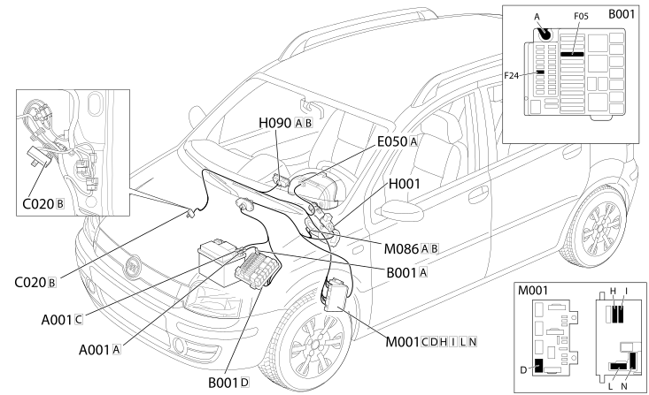

E7045 ELECTRIC STEERING - Location of components
- Path
- Electrical equipment > 1 ELECTRICAL FUNCTIONS > E70 VEHICLE ELECTRONIC SYSTEMS > E7045 ELECTRIC STEERING > E7045 ELECTRIC STEERING - Location of components
- Kind
- topic
- Applies to
- all engines; all production periods
- Interactive page
- https://sloeber94.github.io/elrnDB-fPnd/en/#/2751653
Applies to: all engines; all production periods
Location of components
